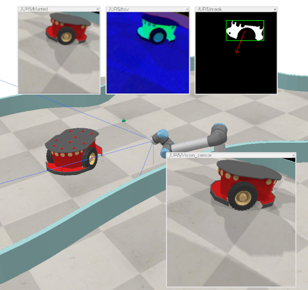

|
Vision sensorsA vision sensor is an instance of type visionSensor, which derives from type sceneObject. It is a viewable object and operates in a very similar way as a camera: it render the scene objects that are in its field of view and triggers detection if specified thresholds are over- or under-shot. Vision sensors should be used over proximity sensors mainly when color, light or structure plays a role in the detection process (e.g. infrared sensors, or, more generally, sensors sensible to light (cameras, etc.)). However, depending on the graphic card the application is running on, or on the complexity of the scene objects, vision sensors might be a little bit slower than proximity sensors.  [Image acquisition and processing] Make sure not to mix-up vision sensors with cameras. Following are the main differences: Vision sensors are added to the scene with [Add > Vision sensor]. Refer also to sim.scene:createObject and visionSensor-related methods and properties. |